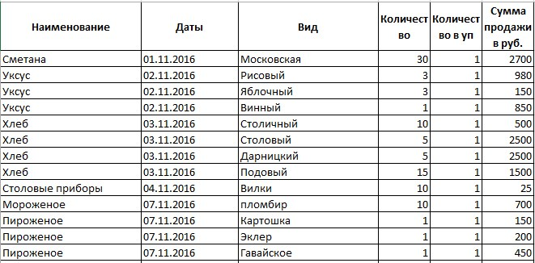

Разнести данные из одного столбца в другие легко
Кто работал с таблицами, в которых большниство данных находятся в одном столбце друг под другом, с разными группировками и объедененными ячейками, тот меня поймет. Совершенно невозможно нормально что-то отфильтровать, сводную таблицу не построить, да и анализировать такие файлы тяжело. Одним из способов разнести данные из одного столбца в несколько других могу поделиться. Для таких случаев у меня под рукой всегда был шаблон файла - "болванка" с пользовательской функцией, форматированием и проч. Нужно только немного манипуляций в двух файлах и не более пятнадцати минут свободного времени. Если нам из исходного столбца нужно перенести данные только один, то дополнительных манипуляций с таблицой не требуется. Но если в исходном столбце данные на 2 и более столбцов, то понадобиться шаблон. Но сначала преобразуем исходную таблицу:
Задача перенести даты в соседний столбик. Сначала создадим перед таблицой пустой столбец с таким же форматированием. Для этого выделим столбец В, возьмем его "формат" (с помощью инструмента "метелка"-"формат по образцу" во вкладке "Главная") и продублируем в столбец А (просто кликнув по нему). Удаляем пустые строки между шапкой и данными, если они есть. Ставим фильтр.
Затем, в первую ячейку пустого столбца скопируем дату. Для этого используем формулу вида:
=(ячейка с исходными данными)
=(B10) //в данном случае
Протягиваем формулу до конца таблицы. После этого внизу в "параметрах автозаполнения" выбираем "заполнить только значения"(эта удобная фича присутствует в последних версиях excel, в старых версиях необходимо будет еще раз повторить действия с "метелкой").
Если Вы не поставили сразу фильтр в шапку таблицы, сейчас самое время (через вкладку "данные" → "фильтр", или "главная" → "сортировка и фильтр" → "фильтр", либо комбинация клавиш ctrl + shift + L. В файле из 1С обычно между группами данных есть почти невидимая пустая строка. Когда мы протягивали формулу, в таких строках в столбец А прописалось значение ноль. И воспользовавшись фильтром мы выберем все эти строки и удалим их.
Теперь переходим к удаленю ненужных данных в столбце А. Все даты в нашем файле имеют бежевую заливку, а остальные - белую. В параметрах фильтра выбираем "Фильтр по цвету" → "белая заливка" (как показано на рисунке ниже).
Затем, очищаем содержимое этих ячеек. Для этого выделяем их и нажимаем delete. Не снимая выделения, снимаем фильтр (открываем фильтр на столбце А и нажимаем "Удалить фильтр с..."). В итоге получаем такого вида файл:
Наша задача выделить только пустые ячейки, игнорируя ячейки с данными. Для этого нажимаем комбинацию клавиш ctrl + G. В новом окне "переход" нажимаем "выделить"
С помощью радио кнопок выбираем "пустые ячейки" и нажимаем ОК.
Эти манипуляции необходимы для того, чтобы продублировать даты только в пустые ячейки. Нажимаем на клавиатуре "=", формула автоматически прописывается в первую из выделенных пустых ячеек. Далее кликаем по ячейке выше с первой датой. И удерживая ctrl нажимаем enter. Выглядит это так:
Основые этапы позади. Осталось удалить строки с датами, которые прописаны во втором столбце. Но сначала нужно преобразовать формулы в первом столбце в значения. Иначе, при удалении строк с датами (выделенными цветом) нашей формуле больше не на что будет опираться и вместо дат появятся "#Н/Д". Выделяем первый столбец. Копируем, а затем вставляем как значения в тот же самый столбец А.
В фильтре выбираем "фильтр по цвету" → "бежевый цвет". Все отфильтрованные строки с датами мы спокойно можем удалить.

И после снятия фильтра у нас получилась вот такая красивая таблица.
Таблица готова. А если нужно перенести в отдельный столбец еще и наименование? Принцип, который применяли выше, нам не поможет. В новой таблице нет окрашенных в разные цвета строк. А наименования выделены только жирным шрифтом. Чтобы принцип сработал, нужно выделить цветом (как в случае с датами) наши наименования. Для этого нам пригодится формула, определяющая жирный шрифт в ячейке и условное форматирование, которое зальет цветом выбранные строки. Как сделать пользовательскую функцию, можете почитать здесь. А про условное форматирование здесь.
Если обрабатывать такого вида файлы приходится постоянно, то разумнее сначала создать файл "шаблон" с прописанной формулой и форматированием. В таком случае, мы преобразованную выше таблицу скопируем в файл-болванку (в нем уже создан дополнительно пустой столбец под наименования). И повторим манипуляции, начиная с удаления данных из ячеек, не залитых цветом. В итоге, у нас должна получиться красивая таблица, в которой даты и наименования перенесены в разные столбцы. С таким видом данных легко будет взаимодействовать: фильтровать, строить сводные таблицы.
Посмотреть видео с вариантом использования:
Опубликовано: